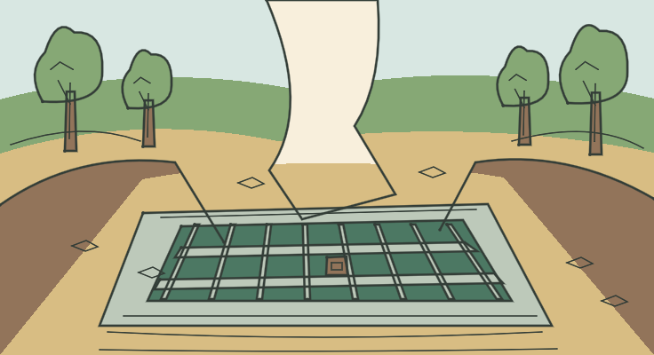
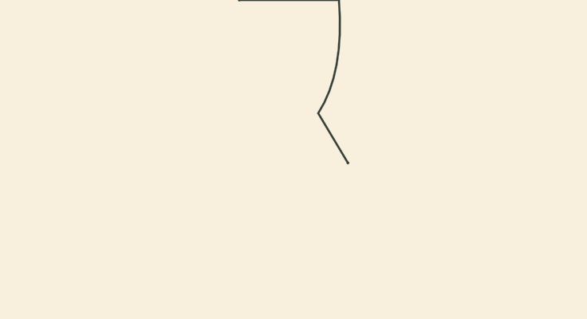
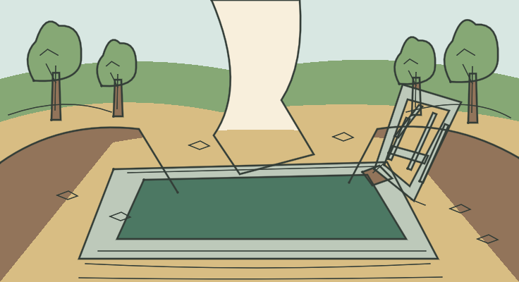
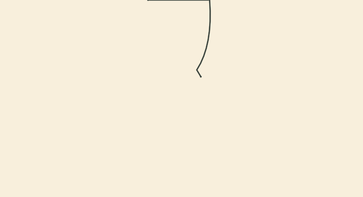
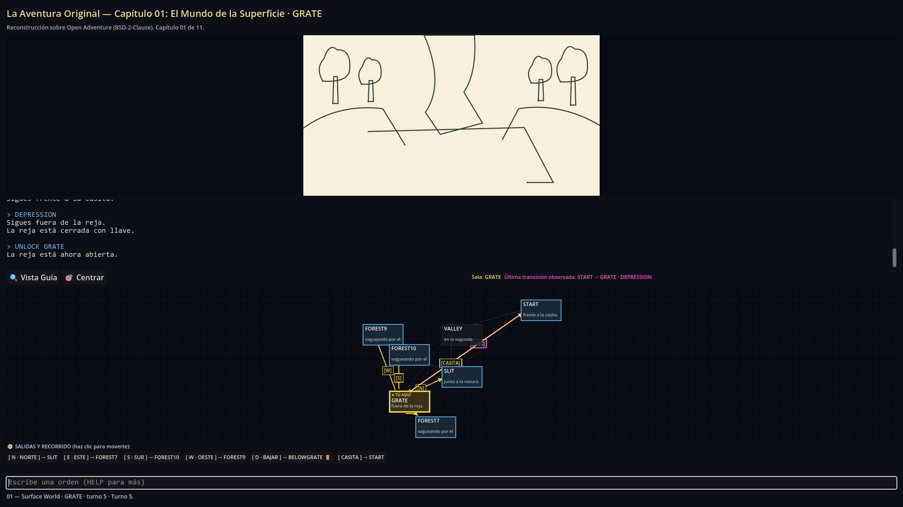
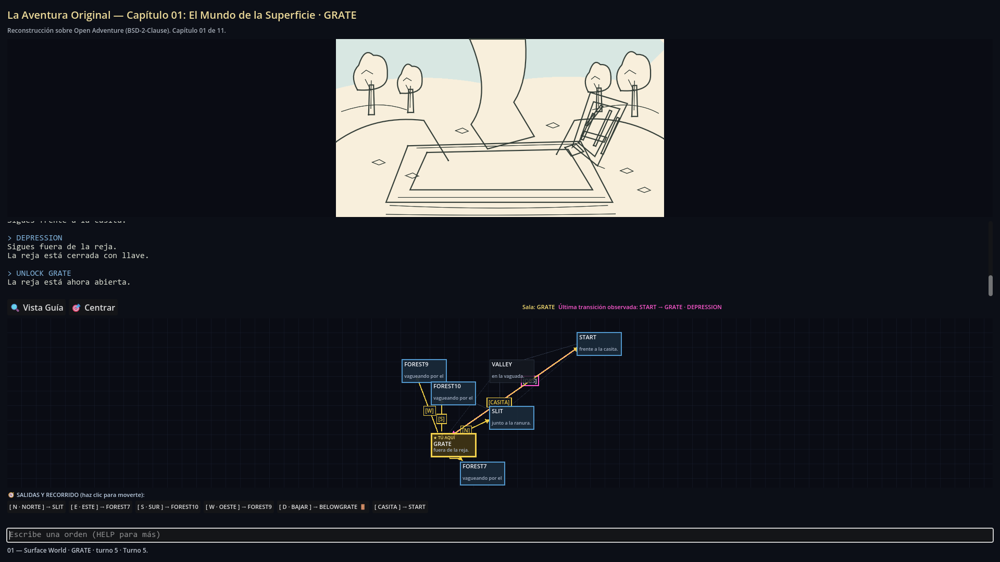

GRATE — Cerrada
Variante GRATE_CLOSED · técnica PASS · aceptación visual pendiente.

Ver LINE/FILL muestreado

Vista dentro del juego · preparación 4.189 s · reproducción 3.502 s.
Dos estados de una misma sala, seleccionados desde GameState. Técnica verificada; revisión artística humana pendiente. Los GIF son frames reales muestreados con paleta y tiempos aproximados; los PNG y las métricas son la evidencia de render.
Variante GRATE_CLOSED · técnica PASS · aceptación visual pendiente.


Vista dentro del juego · preparación 4.189 s · reproducción 3.502 s.
Variante GRATE_OPEN · técnica PASS · aceptación visual pendiente.


Vista dentro del juego · preparación 4.243 s · reproducción 3.505 s.
Tras UNLOCK GRATE, la sala permanece LOC_GRATE y la reproducción sustituye la variante cerrada. Las capturas muestran el inicio del trazado y la reja abierta más avanzada:

